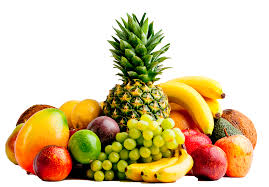

Healthy Fruits
* * *
1. Strawberries
Strawberries are a juicy, red fruit with a high water content. The seeds provide plenty of dietary fiber per serving. Strawberries contain many healthful vitamins and minerals.
Of particular note, they contain anthocyanins, which are flavonoids that can help boost heart health. The fiber and potassium in strawberries can also support a healthy heart.
In one study, women who ate 3 or more servings per week of strawberries and blueberries — which are both known for their high anthocyanin content — had a lower risk of having a heart attack than those with lower intake.
Strawberries and other colorful berries also contain a flavonoid called quercetin. This is a natural anti-inflammatory compound.
A serving of 3 large strawberries provides the following nutrients:
17 calories
4.15 g carbohydrate
1.1 g of fiber
9 mg of calcium
7 mg of magnesium
83 mg of potassium
31.8 mg of vitamin C
Strawberries also contain thiamin, riboflavin, niacin, folate, and vitamins B-6, A and K.
Read more about strawberries.
How to eat strawberries
Strawberries are a versatile fruit. People can eat them raw or add them to breakfast cereals or yogurt, blend them into a smoothie, or make them into jam.
2. Oranges
Oranges are a sweet, round citrus fruit packed with vitamins and minerals.
Oranges are among the richest sources of vitamin C, with one medium fruit providing 117 percent of a person’s daily value of vitamin C.
A 141 g orange also contains the following nutrients:
65 calories
16.27 g carbohydrate
3.4 g of fiber
61 mg of calcium
14 mg of magnesium
238 mg of potassium
63.5 mg of vitamin C
Vitamin C acts as a powerful antioxidant in the body. This vitamin is also essential for immune system function. It boosts immune function by helping the body to absorb iron from plant-based foods.
The human body cannot make vitamin C itself, so people need to get this vitamin from their diet.Oranges also contain high levels of pectin, which is a fiber that can keep the colon healthy by binding to chemicals that can cause cancer and removing them from the colon.
Oranges also provide the following healthful vitamins:
vitamin A, a compound that is important for healthy skin and eyesight
B-vitamins, including thiamin and folate, which help keep the nervous and reproductive systems healthy and help create red blood cells.
Read more about the benefits of oranges.
How to eat oranges
People can eat oranges on their own as a refreshing snack or by drinking a glass of pure orange juice. Juice oranges at home or choose a brand of fresh juice whose label states it is not from concentrate.
People can also grate orange peel into a salad, yogurt, or as a cereal topping to add extra flavor.
3. Limes
Limes are a sour citrus fruit that provide a range of health benefits.
Like other citrus fruits, limes provide a healthful dose of vitamin C. They also have similar health benefits, antibacterial, and antioxidant properties.
The juice of one lime provides the following nutrients:
11 calories
3.7 g carbohydrate
6 g calcium
4 mg magnesium
51 mg potassium
13.2 mg vitamin C
Read more about the benefits of limes and lime water here.
How to eat limes
Limes work well in savory foods. Try adding the juice or grated peel of a lime to flavor salad dressings or rice dishes. Otherwise, juice a lime and add to hot or cold water for a refreshing drink.
4. Pineapple
Pineapple is an exotic fruit that may help reduce inflammation and promote healthy tissue growth.
Pineapple contains an active compound called bromelain, which many people take as a dietary supplement because of its potential health benefits.
The National Center for Complementary and Integrative Health state that bromelain can help with reducing nasal inflammation or sinusitis. However, scientists need to carry out more research into its benefits for osteoarthritis and its anticancer potential.
Pineapples contain manganese, which the body uses to build bone and tissue. A medium slice of pineapple also contains the following nutrients:
42 calories
11.02 g carbohydrate
1.2 g fiber
92 mg potassium
40.2 mg vitamin C
11 mg calcium
Read more about the benefits of pineapple, the pineapple juice, and potential bromelain benefits.
How to eat pineapple
People can enjoy fresh pineapple by itself or in fruit salads. They can also use pineapple to make a tropical salsa or add it as a topping on fish tacos. Try adding frozen pineapple to smoothies.